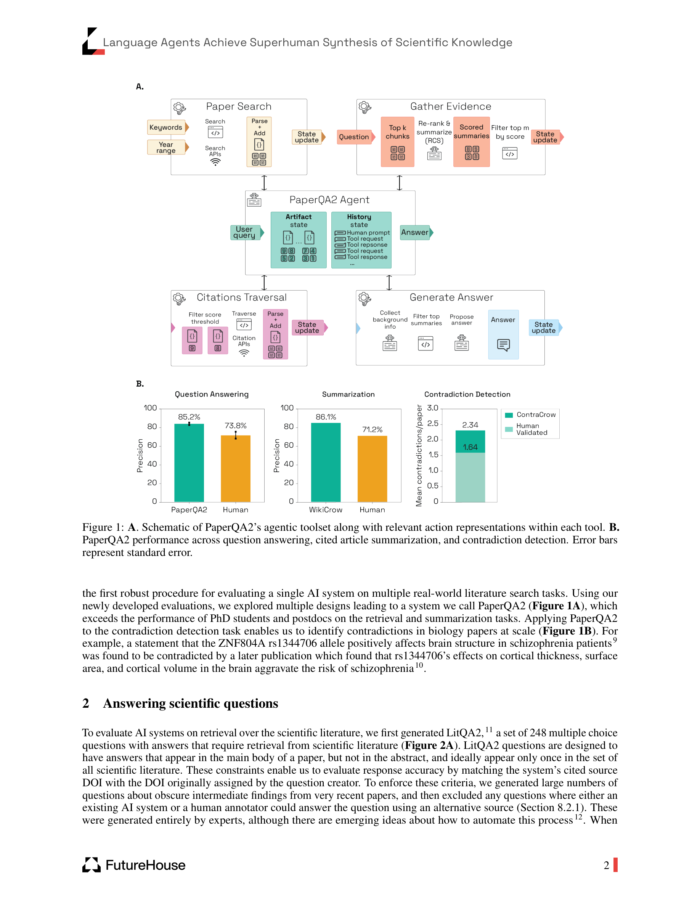

Figure 1
과학 문헌 연구의 세 가지 핵심 과제 -- 정보 검색(retrieval), 요약(summarization), 모순 탐지(contradiction detection) -- 에서 LLM 기반 에이전트 PaperQA2가 도메인 전문가(PhD 수준)의 성능을 매칭하거나 초과함을 엄밀한 인간-AI 비교 방법론으로 실증한 연구이다. PaperQA2는 RAG(Retrieval-Augmented Generation)을 에이전트 기반 다단계 과정으로 분해하여 사실성(factuality)을 최적화하였으며, 이를 활용한 WikiCrow(위키피디아 스타일 요약 생성)와 ContraCrow(문헌 내 모순 대규모 탐지) 시스템을 구축하였다.
LLM은 과학 연구에서 문헌 검색, 합성, 요약을 지원할 잠재력이 있으나, 환각(hallucination), 세부 사항 간과, 벤치마크 미흡이라는 세 가지 근본적 한계가 있다. 기존 벤치마크들은 초록만 대상으로 하거나, 고정된 코퍼스에서의 검색이거나, 관련 논문이 직접 제공되는 등 실제 과학 연구 상황을 반영하지 못하며, 특히 인간 성능과의 직접 비교가 부재하다. 이로 인해 LLM/에이전트가 과학 연구에 실제로 활용 가능한 수준인지 판단하기 어려웠다.
| 항목 | 점수 (5점 만점) | 비고 |
|---|---|---|
| **참신성 (Novelty)** | 4.5 | 엄밀한 인간-AI 비교와 대규모 모순 탐지는 매우 독창적 |
| **기술적 완성도 (Soundness)** | 4.5 | 체계적 어블레이션, 통계적 검정, 인간 전문가 검증이 철저 |
| **실용성 (Practicality)** | 4.5 | 오픈소스(paperqa), 즉시 활용 가능한 도구; 비용이 유일한 장벽 |
| **영향력 (Impact)** | 5.0 | "AI가 과학 문헌 합성에서 초인적"이라는 주장을 실증; 과학 연구 방식의 패러다임 전환 시사 |
| **표현 (Presentation)** | 4.5 | 명확한 도식(Figure 1-4), 정량적 비교, 투명한 방법론 |
| **종합 (Overall)** | 4.5 | AI 기반 과학 문헌 연구의 현재 수준을 가장 설득력 있게 보여주는 랜드마크 논문 |
PaperQA2가 과학 문헌의 검색, 요약, 모순 탐지에서 PhD 수준 전문가를 매칭하거나 초과한다는 결과는, AI 기반 과학 연구의 가능성을 가장 설득력 있게 보여주는 성과이다. 특히 인간에게 아무런 제약을 두지 않은(인터넷, 도구, 시간 무제한) 공정한 비교 방법론, 체계적 어블레이션, 그리고 인간 전문가의 직접 검증이 결과의 신뢰성을 크게 높인다. ContraCrow를 통한 대규모 모순 탐지(논문당 평균 1.64개의 검증된 모순)는 과학 문헌의 일관성과 재현성 문제에 대한 새로운 시각을 제공한다. RAG의 에이전트화와 맥락적 재순위화(RCS)라는 기술적 혁신은 향후 다양한 지식 집약적 AI 시스템에 적용될 수 있는 핵심 설계 원리를 제시한다. FutureHouse(비영리)가 코드를 오픈소스로 공개한 점도 높이 평가할 만하다.